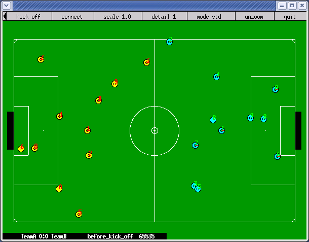

A Robocup no Brasil e projetos futuros(){
Entrevista
printf: Há escolas no Brasil que participam da RoboCup? Qual obteve o melhor resultado? Por que o Brasil ainda tem um desempenho um tanto tímido na RoboCup?
Alexsandro: Existem muitas equipes de várias universidades brasileiras que participam dos eventos da RoboCup. Para citar somente algumas temos o ITA, o IME, a USP, a FEI (Fundação Educacional Inaciana), a UFES, a UFRGS, a UFBA, a UFV, a UNESP, a UNEB e o Instituto Mauá de Tecnologia.
Em competições nacionais e em épocas diferentes destacam-se os times da UFES, da USP de São Carlos, do ITA, da FEI e da UNEB. Em competições internacionais, a equipe da UNEB ficou em terceiro lugar em 2009 e em quarto lugar em 2010 na modalidade de Realidade Mista. A UNEB é também a única equipe brasileira a participar de um torneio internacional de Simulação 3D. Em 2011, a equipe Hipérion do Colégio Objetivo ficou em primeiro lugar na RoboCup Junior, modalidade Resgate. Nas outras ligas do RoboCup os times brasileiros não tiveram um resultado expressivo.
Entre os motivos que levam a uma tímida participação em competições internacionais eu citaria:
- A falta de apoio financeiro. Nas modalidades que envolvem o uso de um robô real, o custo por robô pode chegar a R$ 25 000,00. Mesmo nas modalidades simuladas existem os custos com viagens e diárias e as agências de fomento governamentais não possuem modalidades que se adéquam ao formato destas competições. Estas agências se limitam ao financiamento de pesquisadores doutores que possuam artigos aceitos em conferências que elas considerem relevantes. O financiamento privado advindos de empresas é quase inexistente em nosso país, enquanto que no Japão, nos EUA e vários países europeus, o patrocínio é feito por empresas que usam estas competições para teste de suas tecnologias.
- O número baixo de grupos de pesquisas voltados para a criação de times robóticos. Na CMU, por exemplo, há um grupo de pesquisa composto basicamente por doutorandos dedicados ao desenvolvimento de pesquisas que utilizam o RoboCup como bancada de testes. No Brasil, a maioria dos estudos vem de alunos de graduação que se envolvem nestes projetos por iniciativa própria, muitas vezes sem o apoio direto de suas instituições.
- A falta de incentivo por parte dos professores. Em um evento local da UFES, por exemplo, os professores oferecem 1 ponto extra para equipes bem colocadas e isto faz com que mais alunos participem, gostem e continuem a participar nos anos seguintes.
printf: Existe alguma barreira para que o RoboCup seja mais presente no Brasil? Como você avalia isso?
Alexsandro: É necessário uma maior divulgação da competição e de seus propósitos. Dependendo da modalidade, há também problemas orçamentários e de espaço físico. A documentação da competição não é das melhores, o que dificulta muito a entrada de times iniciantes. Isto faz com que uma maior cooperação entre os times brasileiros mais experientes seja essencial para a criação de novas equipes.

printf: O sr. pretende participar da RoboCup? Em qual categoria? Em que ano o sr. Acredita estará em condições de participar dessa competição? Quais são suas metas nos próximos anos para essa competição? Quando o sr. acha que a FACOM poderá ter um time campeão de alguma categoria da Robocup?
Alexsandro: O nosso grupo pretende participar da competição nacional na modalidade de simulação 3D. O trabalho começou no ano passado, quando ainda pensávamos na simulação 2D, mas devido a questões técnicas, infelizmente isto não foi possível. Esperamos este ano participar da competição nacional, mas sem grandes expectativas. Já para 2013, esperamos ter um time competitivo. Estou plenamente seguro que a FACOM possui um grande número de estudantes talentosos e com a ajuda deles poderemos ter uma boa participação nas competições e, quem sabe, vencer algumas das competições nacionais e também as internacionais.
printf: A motivação para a RoboCup é aprimorar a teoria e a tecnologia sobre construção de robôs, principalmente o trabalho cooperativo entre robôs, não é isso? O filme Blade Runner apresenta robôs humanoides tão perfeitos que quase não é possível distingui-los de outros seres humanos. Assim, perguntamos: será que um dia a ficção se tornará realidade um dia?
Alexsandro: Sim, a RoboCup visa exatamente responder a estas questões. Quanto à ficção científica ainda estamos longe de possuir robôs humanoides tão perfeitos. Mas muito já foi feito e a tecnologia robótica já está presente entre nós sem que percebamos este fato. Alguns exemplos são os veículos inteligentes que estacionam sozinhos; os sistemas a bordo de aviões de passageiros que auxiliam os pilotos nos pousos e decolagens; os sistemas de empacotamento de livros em grandes livrarias como a Amazon; e sistemas de soldagem de veículos em montadoras.
}